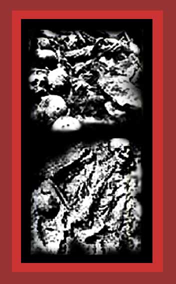

| Stalin is responsible for the murder of about 43,000,000 people, 1929-1953. I could find virtually no photos of these dead on the internet, except for the exhumed skeletons of his victims shown here and some photos of Ukrainians he murdered by starvation. For documentation, see Lethal Politics. Source: unknown. |